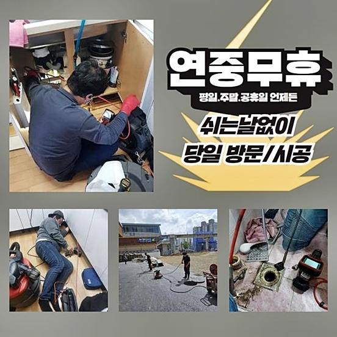
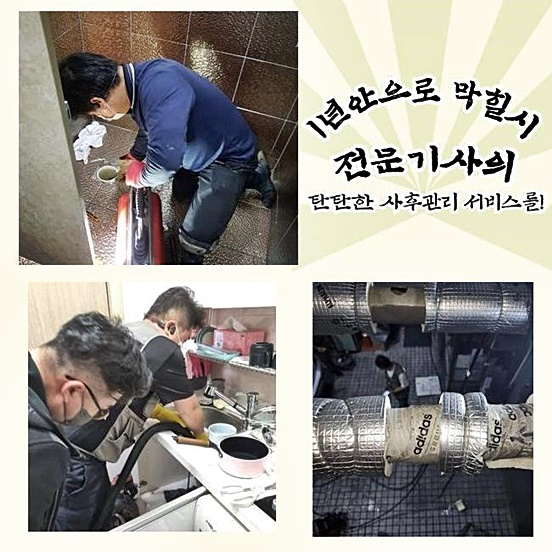
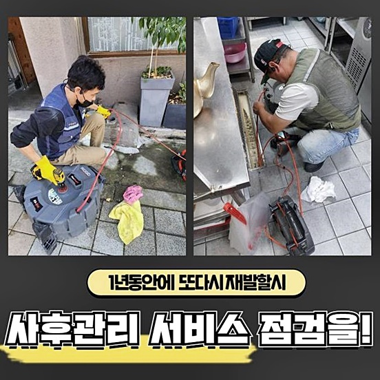
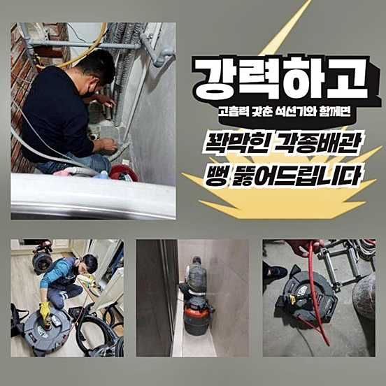
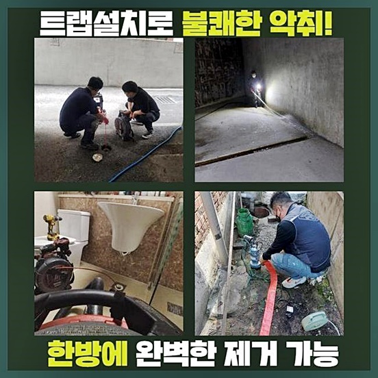

🏠 중랑구 묵동욕실막힘 신내동 오수맨홀청소 설비공사
용인시 처인구 배관막힘 전문 시공 후기

📋 작업 개요
- 위치: 용인시 처인구, 수원시 영통구, 화성시 동탄
- 서비스 유형: 배관막힘, 고압세척, 내시경점검
- 작업 일시:
- 업체명: 하수구수사대 (010-5615-2118)
🔍 문제 상황
중랑구 묵동욕실막힘 신내동 오수맨홀청소 설비공사
배수장애가 나타나면 불편들이 대두됩니다
현장을보고 이 문제에 대해 안내해볼테니 참고하면 유용한 정보가 될 수 있어요
앞으로 안내드릴 현장이라 함은 아파트 관리하시는 분이 연락을 해오셨어요
고객분은 주기성을 가지고 점검을 실시했으나 뜬금없이 연립주택 내 싱크대에서도 막히는 증세가 야기된다 상황설명을 이어가셨습니다
일전에 주위에 있는 가까운 기사에게 도움을 청해보았으나검색해보시고는 스프링말고도 전문적인 장비들이 많다는걸 아셨고 배수관막힘을 전문으로하는 업체가 있다는걸 아시고 그 중 저희전문진에게 연락하셨어요
해마다 배수관 검수를 수행하더라도 오수가 정체된다면 그 까닭은 가가호호 하수관에 존재한다기보단 중앙시설에 존재한다는걸 알 수 있게하는 문제니 살펴보겠습니다
증상을 인지하고 빨리 방문한 장소는 한 다세대 아파트였고, 조사끝에 원인부분은 집수 출수구에 자리하고 있었죠

🔎 원인 분석
💡 전문가 진단: 정밀 진단 장비를 사용하여 슬러지의 고착 여부를 판명하고 타격/세척 작업을 실시했습니다.
외측에 있는 정화시설의 뚜껑을 여니 수월히 배출이 안되는 모습이였고 하단부에는 오염된 기름기들이 붙어있어 악조건의 상태였는데요
집수시설에도 이물들이 쌓여있으면 안쪽도 상황이 안좋다는것을 예상하며 내시경장치를 사용해 진찰을 수행했습니다
진단 시 사용되는 내시경기기는 오염된 하수관을 관찰하게끔하는 내시경장치로 화각범위가 크고 화질도 좋기때문에 복잡한 하수관일지라도 이물질을 잡습니다
그렇기에 잔해가 얼만큼 존재하는지 확실하게 파악해볼 수 있기에 이곳에선 집수시설에 슬러지가 존재하던 모습이었고 어디까지 증세가 확산된건지 확인해야했습니다
문제가 발발하던 지점에 내시경장치를 놓고 해당 위치가 어디인가 파악하고자 탐지도구를 사용하여 내시경의 좌표를 찾아가기 시작했어요
탐지도구라 함은 내시경의 헤드부를 하수도에 넣어주고 바깥쪽에서 진단하면 내시경이 자리잡고 있는 장소에서 시그널이 전송되는데그 반경이 30센치 정도로 걱정없답니다
매립된 배관들은 직관적으로 안보이므로 어디가 증세가 확산된건지 넘겨짚기엔 구조자체가 난해하기에 관로탐지기는 길게 뻗어있는 배관들을 세척해줄때 적극적으로 쓰이죠
내시경장치는 내부서 떨어져있더라도 부위를 가늠할수 있지만 내시경라인을 내리면서 넣으면 지금의 지점이 어딜지 알수가없어서 탐지기기와 병행을 하는것이죠
한 곳에서만 수리를 진행시키는건 심부에도 이물들이 대다수 자리하고 있어 수출과 입구에서 장치를 투입해 컨택하는 구간에서 청소과정을 실시하는게 적절한 것이라 결론지었습니다

🔧 작업 과정
고압노즐 방식도 실시할 수 있으나 금일은 외측에서 내측으로는 굴곡이 져있고 길지않은 길이로인해 스케일링으로도 세척이 가능했습니다
고객님에게도 앞서 실시할 세척과정을 안내한 후 외측에도 문제가 온전치 못해서 지금껏 세척진행 시 호전되는 양상이 없어서 저희들이 외부시설까지 청소할 요량이였습니다
보통의 때에는 하수들이 흐르는것이 맞지만 통로가 어디인가 알수없을만큼 증세가 심한 상황이였고 장기간동안 단단해진 엉켜버린 잔해물도 쉽게 목격했습니다
석션장비를 사용해서 벽면에 이물들을 흡입해주었는데 내측엔 오수들이 배출되지않았기에 빠져나오는게 많았었어요
석션장치로 말씀드리면 내외부의 차이나는 압들을 운용하여 빨아당기는 도구로서 접촉하는 지점에 틈들을 막는다면 공기가 흐르지않아 강력한 힘을 유지시켜줍니다
꼼꼼한 흡입들을 한다면 부유하던 부유물들이 걷혀지면서 2차적으로 빼줘야하는건 단단해진 이물질들이므로 고착물의 청소가 원활히 이어가게됩니다
다음으로 샤프트장치를 넣어서서 배관의 이물제거를 시작해주었는데 샤프트기기는 전동드라이버를 결합시켜 켜줄 시에 회전하는 강도가 라인선으로 흘러가 이물제거를 담당하는 체인부로 전달시켜주는 것이죠
그런다면 사슬부분의 체인뭉치가 돌아가며 내부의 이물질들을 타겟으로하여 탈거시키고 세척을 이어가게되는데석션장치로 세척이 안되었던 부위를 샤프트기기로 메우고 깔끔한 배관을 만드는거죠
이러한 세척을 이어갈때에는 저희전문진은 내시경기기를 이용해서 내부 상황을 인지하며 작업해주기에 샤프트장치가 훑으며 놓치는 부분이 있는가를 보며 세심한 작업이 진행시키고 있습니다
입구에서부터 이물세척이 행해지고 불현듯 깊숙한 지점으로 진행시켰고 L자 배관을 체크할 수 있었고 외측의 수출부에 와있는걸 깨달았죠
이후에 세척지점을 바꾸어 집수 수출라인부터 청소과정을 행하였고 잔해물이 누적되어 배수진행이 불가하던 집수정부는 뚫리게되어 물빠짐이 이뤄지는걸 보았습니다
마무리 과정으로 샤프트장치를 투입한 뒤서 안쪽을 꼼꼼히 깨끗하게 만들어주었고 해당 과정이 끝나고내시경기기로 배수관은 잘 깨끗해진 걸 확인하고 외부쪽 청소도 끝냈어요
주변을 정리해주고 현장에서 나오게 되었는데요


✅ 작업 완료
이곳과 같이 외부설비까지 문제를 일으키는 배수관도 저희전문인은 작업하여 원상복구시킨 곳이였어요
여러분한테 문제들이 생기게되어 즉각적인 작업이 업체들이 필요하시면 저희전문진이 그 고민을 해결해드릴게요
전국적으로 1시간에 도착이 진행되며 중요사항으로 탄탄한 결과들을 신경쓰니 부담없이 문의해주시면 됩니다!
또한 질의사항이 생겨났을 시 문의 중에 차분히 돕고있으니 염려는 하지 않으셔도 되요!


⚠️ 하수구 배관 막힘 예방 및 관리 가이드
- ✅ 머리카락, 비닐, 물티슈 등 물에 분해되지 않는 이물질은 절대 흘려보내지 마세요.
- ✅ 기름기 많은 식기는 설거지 전 키친타올로 먼저 기름때를 닦아내세요.
- ✅ 주기적으로 배수구에 뜨거운 물을 가득 부어주어 유지방 고착을 방지하세요.
- ✅ 작업 후 1년 이내 재발 시 무상 A/S 보증 서비스를 제공합니다.
💡 핵심 정리
- 확실한 장비 작업(내시경 점검 및 샤프트 스케일링)으로 원인을 뿌리 뽑습니다.
- 작업 후 1년 이내에 동일한 부위 재발 시 100% 무상 A/S 서비스를 보장합니다.
- 서울 · 경기 · 인천 전 지역에 24시간 언제든 긴급 출동할 수 있도록 항시 대기 중입니다.
❓ 자주 묻는 질문 (FAQ)
🚨 용인시 처인구 배관막힘 문제로 고민이신가요?
정확한 원인 진단과 확실한 시공으로 재발 없는 해결을 약속드립니다.
24시간 긴급 출동 | 서울 · 경기 · 인천 전지역 | 1년 내 재발 시 무상 A/S